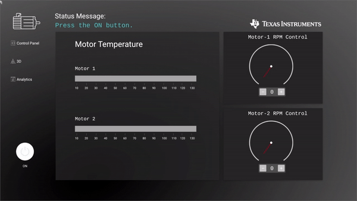
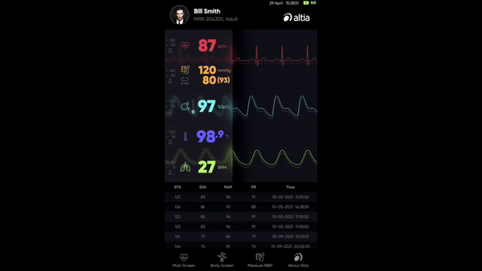

Texas Instruments
Industrial HMI
Demonstrates how to design QT based Industrial HMI demo running at 60fps for your display at full HD resolution. Design adds camera functionality to monitor operator with AI
Texas Instruments

Home Automation HMI: Themostat Design
Evaluate creation of home automation HMI on AM62x processors with Thermostat Design. Design adds connectivity function with ethernet and wifi to display location based weather updates and remote configuration
Altia
Health Monitor HMI Design
This health monitor features Altia GUI development software and optimized code generation solutions for TI AM62x. Altia’s streamlined workflow enables delivery of custom 2D/3D graphics on production hardware with safe, certifiable C code. Altia DeepScreen for TI AM62x leverages all on-chip features for best performance and lowest footprint